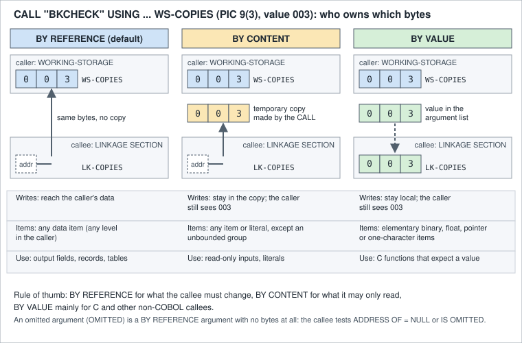

Subprograms, CALL and Linkage
|
This content was generated with the assistance of AI and should be verified against the official documentation before being relied on in production. |
This page is written against ISO/IEC 1989:2023 (edition 3, January 2023; an upcoming 4th edition is in ballot), in which CALL, BY CONTENT, nested programs, EXTERNAL and GLOBAL come from COBOL 85 and BY VALUE, RETURNING, OMITTED, LOCAL-STORAGE and RECURSIVE from COBOL 2002; against IBM Enterprise COBOL for z/OS 6.5 (PTFs through September 2026) on z/OS 3.2, where the OPTIONAL phrase arrived with the base 6.5 release; and against GnuCOBOL 3.2 (28 July 2023, the latest release), with which every program on it was compiled with cobc -x -Wall and run on 2026-10-20 (and again with -std=ibm, which printed the same results unless the text says otherwise). z/OS examples are labelled "z/OS; not run here" and are checked against the Language Reference and the Programming Guide.
A real COBOL application is never one program. The nightly Circulation run is a driver that reads the book master and asks small subprograms to check out a copy, assess a fine or format a line, and each of those subprograms can be written, compiled and tested by itself. This page covers the CALL statement in all its forms, how arguments are passed and received, how programs are found (linked in or loaded at run time), what a subprogram remembers between calls, how programs share data without passing it, and how a multi-program executable is built with cobc and, on z/OS, with the binder. Nested programs and the PROGRAM-ID forms are introduced on Program Structure and Divisions; pointers and SET ADDRESS OF are on Pointers and Dynamic Storage; user-defined functions, the alternative to a subprogram that returns one value, are on User-Defined Functions and Prototypes; calls to C, Java and Python are on Interoperability with C, Java and Python; the compile and link steps on z/OS are on Compiling, Linking and Language Environment.
Where the book is outdated: Taulli’s Modern Mainframe Development (2022, chapter 7) shows a CALL that lists its arguments without the USING phrase, which is not valid COBOL (GnuCOBOL stops at the first argument with "syntax error, unexpected Identifier"), and it never explains the three ways of passing an argument. The difference between BY REFERENCE, BY CONTENT and BY VALUE is the heart of subprogram design and is explained below from the Language Reference. The chapter also treats subprograms as something to link in, whereas current Enterprise COBOL offers the DYNAM option, CANCEL, OPTIONAL parameters and, since 6.4, prototypes that let the compiler check a CALL; each is covered here.
The model: caller, callee and run unit
A program that executes CALL is the calling program; the program it names is the called program or subprogram. Together with everything they call, they form a run unit: the set of programs that run from the first program started until STOP RUN (or an abend) ends it. Several rules follow from this and are worth stating before the syntax:
-
A called program does not end the run unit. It ends with
GOBACKorEXIT PROGRAM, which return control to the caller;STOP RUNin a subprogram ends the whole run unit. -
A subprogram keeps its
WORKING-STORAGEbetween calls (its last-used state) unless it isINITIALor is cancelled. Both are shown below. -
Parameters are matched by position, never by name. The caller’s argument and the callee’s parameter may have different names and even different data descriptions, but for
CALLthey must have the same length in bytes (the compiler cannot check this across separately compiled programs, so a mismatch is a run-time bug, see the section on mismatches). -
The data the callee describes in its
LINKAGE SECTIONoccupies no storage of its own. It is a template laid over whatever the caller passed.
The CALL statement
The general form, rewritten for readability, is:
CALL program-name-literal | program-name-identifier
[ USING { [BY REFERENCE] argument ...
| BY CONTENT argument ...
| BY VALUE argument ... } ... ]
[ RETURNING result-item ]
[ ON EXCEPTION imperative-statement ]
[ NOT ON EXCEPTION imperative-statement ]
[ END-CALL ]-
Literal or identifier.
CALL "BKCHECK"names the program in a literal;CALL WS-PROGnames it in a data item that holds the program name at run time. The identifier form always resolves the program at run time, which is what makes a table-driven dispatcher possible (a menu choice, a file type, a customer-specific rule). The literal form may be resolved at link time, depending on the options described below. -
USING. Arguments followUSING, and each carries a passing mode that applies until the next mode keyword (the mode before the first argument isBY REFERENCE). A list of arguments withoutUSINGis a syntax error. -
RETURNING. The called program’s result goes into one item of the caller. -
ON EXCEPTION(synonymON OVERFLOW). Runs when the called program cannot be made available. It is covered with the other run-time error phrases on Error Handling and Declaratives, and is used below. -
The program name. It is the
PROGRAM-IDname (or theASliteral ofPROGRAM-ID) of the called program. On z/OS it must also match the name of the program object or an alias of it, and thePGMNAMEoption decides how names longer than eight characters or in mixed case are handled.
Passing arguments: BY REFERENCE, BY CONTENT and BY VALUE
The three modes differ in one thing: who owns the bytes the callee works on.

-
BY REFERENCE(the default when no mode is written) passes the address of the caller’s own data item. The callee’s parameter is the caller’s item, so every change the callee makes is visible to the caller. It is the mode for groups, tables, records and output parameters. -
BY CONTENTmakes theCALLcopy the argument into temporary storage and passes the address of that copy. The callee still receives an address and still declares an ordinaryLINKAGE SECTIONitem, but it can change only the copy: the caller’s item is untouched. An argument may be a literal, and the compiler checks that the data description matches, with no conversion, extension or truncation. It cannot be an unbounded group or a function identifier. -
BY VALUEpasses the value itself in the parameter list, not an address. The callee gets a temporary copy, and a change to it does not reach the caller. The argument must be an elementary item or literal of a type with a defined value representation: binary (BINARY,COMP,COMP-4,COMP-5), floating point (COMP-1,COMP-2), a pointer or function or procedure pointer, one alphanumeric or national character, or an item taken from theLENGTH OFspecial register; groups are not allowed. A fixed-point numeric literal with nine or fewer digits is passed as a fullword binary value and a floating-point literal as an 8-byteCOMP-2.BY VALUEexists mostly for calls to C, assembler and Java, which expect values, and is the subject of the C interoperability page.
The next program passes the book master fields in all three ways to a subprogram that changes each of them (the two are built together). The subprogram is called PASSSUB; it declares all four parameters with the default mode, which is how a callee receives a BY REFERENCE or a BY CONTENT argument.
* Caller: three passing modes and RETURNING.
IDENTIFICATION DIVISION.
PROGRAM-ID. PASSMODE.
DATA DIVISION.
WORKING-STORAGE SECTION.
01 WS-COPIES PIC 9(3) VALUE 3.
01 WS-PRICE PIC 9(4)V99 VALUE 24.50.
01 WS-DAYS PIC S9(9) COMP-5 VALUE 4.
01 WS-FINE PIC 9(4)V99 VALUE ZERO.
PROCEDURE DIVISION.
MAIN-PARA.
DISPLAY "before: copies=" WS-COPIES " price=" WS-PRICE
" days=" WS-DAYS
CALL "PASSSUB" USING BY REFERENCE WS-COPIES
BY CONTENT WS-PRICE
BY CONTENT WS-DAYS
BY REFERENCE WS-FINE
DISPLAY "after: copies=" WS-COPIES " price=" WS-PRICE
" days=" WS-DAYS " fine=" WS-FINE
STOP RUN.
END PROGRAM PASSMODE. * Callee: changes all its parameters; BY REFERENCE is the default..
IDENTIFICATION DIVISION.
PROGRAM-ID. PASSSUB.
DATA DIVISION.
LINKAGE SECTION.
01 LK-COPIES PIC 9(3).
01 LK-PRICE PIC 9(4)V99.
01 LK-DAYS PIC S9(9) COMP-5.
01 LK-FINE PIC 9(4)V99.
PROCEDURE DIVISION USING LK-COPIES LK-PRICE LK-DAYS LK-FINE.
MAIN-PARA.
SUBTRACT 1 FROM LK-COPIES
MULTIPLY 2 BY LK-PRICE
ADD 100 TO LK-DAYS
COMPUTE LK-FINE = LK-DAYS * 0.35
DISPLAY "callee: copies=" LK-COPIES " price=" LK-PRICE
" days=" LK-DAYS
GOBACK.
END PROGRAM PASSSUB.Compiled with cobc -x -Wall -o passmode passmode.cob passsub.cob, no warnings, it prints:
before: copies=003 price=0024.50 days=+0000000004
callee: copies=002 price=0049.00 days=+0000000104
after: copies=002 price=0024.50 days=+0000000004 fine=0036.40The callee decremented LK-COPIES and the caller saw 002 (BY REFERENCE); the callee doubled the price and added 100 to the days, yet the caller still holds 24.50 and 4 (BY CONTENT); and the fine came back through the fourth, BY REFERENCE, parameter. With -std=ibm the results are the same and the implied-decimal items are displayed without the decimal point (002450), as DISPLAY does under that dialect.
BY VALUE is shown with a function everyone has, the C library abs, so that no C source is needed. The argument is a COMP-5 item (a native 4-byte integer, which is what a C int is) and the result comes back with RETURNING:
* BY VALUE: call the C library function abs().
IDENTIFICATION DIVISION.
PROGRAM-ID. BYVAL.
DATA DIVISION.
WORKING-STORAGE SECTION.
01 WS-DELTA PIC S9(9) COMP-5 VALUE -17.
01 WS-ABS PIC S9(9) COMP-5 VALUE ZERO.
PROCEDURE DIVISION.
MAIN-PARA.
CALL "abs" USING BY VALUE WS-DELTA
RETURNING WS-ABS
DISPLAY "delta=" WS-DELTA " abs=" WS-ABS
STOP RUN.
END PROGRAM BYVAL.Compiled with cobc -x -Wall -o byval byval.cob, no warnings, it prints:
delta=-0000000017 abs=+0000000017The same program built with -std=ibm printed the same line. Two GnuCOBOL 3.2 limits matter for portable code. First, a COBOL callee that receives a BY VALUE parameter compiles with a warning, because that part of the implementation is unfinished:
passsub.cob:12: warning: handling of parameters passed BY VALUE is unfinished; implementation is likely to be changed [-Wunfinished]
10 | PROCEDURE DIVISION USING BY REFERENCE LK-COPIES
11 | BY REFERENCE LK-PRICE
12 > BY VALUE LK-DAYS
13 | BY REFERENCE LK-FINE.Second, a COBOL program cannot declare RETURNING in its own PROCEDURE DIVISION header: cobc says program RETURNING is not implemented [-Wpending], and a program that was built that way and called with CALL ... RETURNING stopped with "attempt to reference invalid memory address (signal)". Between GnuCOBOL programs, the portable way to return a result is an extra BY REFERENCE parameter (as LK-FINE above); calls to C functions with RETURNING work, as abs shows.
The LINKAGE SECTION and PROCEDURE DIVISION USING
The called program receives its parameters through the PROCEDURE DIVISION USING header and describes them in the LINKAGE SECTION:
PROCEDURE DIVISION [ USING { [BY REFERENCE] [OPTIONAL] parameter ...
| BY VALUE parameter ... } ... ]
[ RETURNING result-item ].-
Every
USINGparameter must be a level-01 or level-77 item in theLINKAGE SECTION. The caller can pass an item of any level. -
The correspondence is by position. The number of parameters should equal the number of arguments; the compiler cannot correct a mismatch, and it will not even detect one across separately compiled programs.
-
A
LINKAGE SECTIONitem allocates no storage and cannot have aVALUEclause (except for condition names). Before the program touches aLINKAGE SECTIONitem that is not a parameter, its address has to be set withSET ADDRESS OF, as in the section on addresses below. -
The header’s
BY REFERENCEis the default; a callee that receives an argument passedBY CONTENTorBY REFERENCEdeclares itBY REFERENCEor with no mode, asPASSSUBdoes. -
A parameter may have a
REDEFINESclause, and a group parameter is described with its elementary items so the callee can use the fields by name.
The best way to keep caller and callee in step is to describe the data once, in a copybook, and COPY it into the caller’s WORKING-STORAGE SECTION (or FILE SECTION) and the callee’s LINKAGE SECTION. The Circulation driver below reads BOOKMAST through BOOKREC and passes the record to BKCHECK, which declares the same record from the same copybook (see Copybooks and COPY REPLACING):
* Circulation: read the book master, ask BKCHECK to check out one copy.
IDENTIFICATION DIVISION.
PROGRAM-ID. CIRCMAIN.
ENVIRONMENT DIVISION.
INPUT-OUTPUT SECTION.
FILE-CONTROL.
SELECT BOOK-FILE ASSIGN TO "BOOKMAST"
ORGANIZATION IS LINE SEQUENTIAL.
DATA DIVISION.
FILE SECTION.
FD BOOK-FILE.
COPY BOOKREC.
WORKING-STORAGE SECTION.
01 WS-EOF PIC X VALUE "N".
88 END-OF-BOOKS VALUE "Y".
01 WS-RESULT PIC 9 VALUE ZERO.
88 CHECKOUT-OK VALUE 0.
88 BOOK-WITHDRAWN-R VALUE 1.
88 NO-COPIES-LEFT VALUE 2.
PROCEDURE DIVISION.
MAIN-PARA.
OPEN INPUT BOOK-FILE
PERFORM UNTIL END-OF-BOOKS
READ BOOK-FILE
AT END SET END-OF-BOOKS TO TRUE
NOT AT END PERFORM CHECK-ONE
END-READ
END-PERFORM
CLOSE BOOK-FILE
STOP RUN.
CHECK-ONE.
CALL "BKCHECK" USING BOOK-RECORD WS-RESULT
EVALUATE TRUE
WHEN CHECKOUT-OK
DISPLAY BOOK-ID " " BOOK-TITLE " copies now "
BOOK-COPIES
WHEN BOOK-WITHDRAWN-R
DISPLAY BOOK-ID " withdrawn"
WHEN NO-COPIES-LEFT
DISPLAY BOOK-ID " no copies left"
END-EVALUATE.
END PROGRAM CIRCMAIN. * Subprogram: one checkout against a book record (BY REFERENCE).
IDENTIFICATION DIVISION.
PROGRAM-ID. BKCHECK.
DATA DIVISION.
LINKAGE SECTION.
COPY BOOKREC.
01 LK-RESULT PIC 9.
PROCEDURE DIVISION USING BOOK-RECORD LK-RESULT.
MAIN-PARA.
EVALUATE TRUE
WHEN BOOK-WITHDRAWN
MOVE 1 TO LK-RESULT
WHEN BOOK-COPIES = ZERO
MOVE 2 TO LK-RESULT
WHEN OTHER
SUBTRACT 1 FROM BOOK-COPIES
MOVE 0 TO LK-RESULT
END-EVALUATE
GOBACK.
END PROGRAM BKCHECK.With BOOKMAST in the current directory (its four books have 3, 2, 1 and 1 copies, the last one withdrawn), compiled with cobc -x -Wall -I. -o circmain circmain.cob bkcheck.cob, no warnings, it prints:
000001 DATA STRUCTURES copies now 002
000002 COBOL BASICS copies now 001
000003 BATCH PROCESSING copies now 000
000004 withdrawnBKCHECK changed BOOK-COPIES directly in the caller’s record because the record was passed BY REFERENCE, and reported what it did through LK-RESULT. Two points are worth noting. The copybook also defines the level 88 names BOOK-ACTIVE and BOOK-WITHDRAWN, so the callee tests the status without a literal. And the driver’s own result item could not be called BOOK-WITHDRAWN, because the copybook already owns that name in the caller; this is the usual cost of copying the same record into both programs and is solved with COPY ... REPLACING where it matters. With -std=ibm the output is the same.
RETURNING and RETURN-CODE
A subprogram can hand a result back in two ways, and they should not be mixed up:
-
RETURNING.CALL ... RETURNING itemstores the callee’s result initem. In Enterprise COBOL the callee must also declareRETURNINGin itsPROCEDURE DIVISIONheader, the two items must agree inPICTURE,USAGE,SIGN,SYNCHRONIZE,JUSTIFIEDandBLANK WHEN ZERO, and the callee must initialize its result item because it is output only. If the call fails with an exception the item is unchanged, and theRETURN-CODEspecial register is not set by aCALLthat usesRETURNING. It is the same convention as C’s return value, which is why it is the way to call C functions. -
RETURN-CODE. Every program has this special register, and it is the traditional way for a called program to report success (zero) or a severity (4, 8, 12, 16) to its caller, and on z/OS to the job step’s condition code. It is covered withSTOP RUNandGOBACKon the error handling page.
The following pair is the Enterprise COBOL form, in which the library computes a fine and returns it (z/OS; not run here, checked against the Language Reference; as shown above, GnuCOBOL 3.2 cannot compile the callee):
* Caller
CALL "FINECALC" USING BY REFERENCE WS-DAYS
RETURNING WS-FINE
* Callee, PROCEDURE DIVISION header
PROCEDURE DIVISION USING LK-DAYS RETURNING LK-FINE.When a subprogram returns exactly one value and has no side effects, a user-defined function is often clearer, because it can be used inside an expression; see User-Defined Functions and Prototypes.
OMITTED and OPTIONAL arguments
A caller can leave out a BY REFERENCE argument by writing OMITTED in its place, which lets a shared subprogram gain a parameter without every caller changing at once. Enterprise COBOL also assumes an extra OMITTED argument after the last one named. The callee has two ways to find out.
The first works everywhere: an omitted parameter has a null address, so IF ADDRESS OF parameter = NULL is true. The caller below calls OMITSUB twice, the second time without a member:
* Caller: omits the second argument on purpose.
IDENTIFICATION DIVISION.
PROGRAM-ID. OMITCALL.
DATA DIVISION.
WORKING-STORAGE SECTION.
01 WS-BOOK-ID PIC 9(6) VALUE 1.
01 WS-MEMBER-ID PIC 9(6) VALUE 100.
PROCEDURE DIVISION.
MAIN-PARA.
CALL "OMITSUB" USING WS-BOOK-ID WS-MEMBER-ID
CALL "OMITSUB" USING WS-BOOK-ID OMITTED
STOP RUN.
END PROGRAM OMITCALL. * Callee: tests whether the second argument was supplied.
IDENTIFICATION DIVISION.
PROGRAM-ID. OMITSUB.
DATA DIVISION.
LINKAGE SECTION.
01 LK-BOOK-ID PIC 9(6).
01 LK-MEMBER-ID PIC 9(6).
PROCEDURE DIVISION USING LK-BOOK-ID LK-MEMBER-ID.
MAIN-PARA.
DISPLAY "book " LK-BOOK-ID WITH NO ADVANCING
IF ADDRESS OF LK-MEMBER-ID = NULL
DISPLAY " (no member given)"
ELSE
DISPLAY " for member " LK-MEMBER-ID
END-IF
GOBACK.
END PROGRAM OMITSUB.Compiled with cobc -x -Wall -o omitcall omitcall.cob omitsub.cob, no warnings, it prints:
book 000001 for member 000100
book 000001 (no member given)The second way is the OPTIONAL phrase, new in Enterprise COBOL 6.5, which declares a parameter as allowed to be absent and permits the OMITTED class test on it. It is not allowed under the LP(64) option. GnuCOBOL 3.2 accepts it, as this callee shows (the caller is the same as above):
* Callee with an OPTIONAL second parameter (COBOL 2023 syntax).
IDENTIFICATION DIVISION.
PROGRAM-ID. OPTSUB.
DATA DIVISION.
LINKAGE SECTION.
01 LK-BOOK-ID PIC 9(6).
01 LK-MEMBER-ID PIC 9(6).
PROCEDURE DIVISION USING LK-BOOK-ID OPTIONAL LK-MEMBER-ID.
MAIN-PARA.
IF LK-MEMBER-ID IS OMITTED
DISPLAY "book " LK-BOOK-ID " (member omitted)"
ELSE
DISPLAY "book " LK-BOOK-ID " for member " LK-MEMBER-ID
END-IF
GOBACK.
END PROGRAM OPTSUB.Built with cobc -x -Wall -o optcall optcall.cob optsub.cob (optcall.cob is omitcall.cob with the program names changed), no warnings, it prints:
book 000001 for member 000100
book 000001 (member omitted)With -std=ibm the output is the same, but cobc adds the note warning: USING OPTIONAL used [-Wdialect], because the dialect file of 3.2 predates the 6.5 syntax. An omitted parameter must never be referenced before it has been tested: the next section shows what happens when it is not.
ADDRESS OF as an argument or a parameter
Because every BY REFERENCE argument is an address, a program can pass an address explicitly. The caller makes a POINTER item point at a record with SET ptr TO ADDRESS OF record and passes the pointer; the callee declares the record in its LINKAGE SECTION, receives the pointer as its parameter, and overlays the record with SET ADDRESS OF record TO ptr. This is how a subprogram works on data that its caller allocated dynamically or that it receives from the operating system (a parameter area, a buffer). The record can have any description the callee prefers, because only the address is shared:
* Caller passes the address of a record instead of the record.
IDENTIFICATION DIVISION.
PROGRAM-ID. PTRMAIN.
DATA DIVISION.
WORKING-STORAGE SECTION.
COPY BOOKREC.
01 WS-BOOK-PTR USAGE POINTER.
PROCEDURE DIVISION.
MAIN-PARA.
MOVE 2 TO BOOK-ID
MOVE "COBOL BASICS" TO BOOK-TITLE
MOVE 2 TO BOOK-COPIES
SET WS-BOOK-PTR TO ADDRESS OF BOOK-RECORD
CALL "PTRSUB" USING WS-BOOK-PTR
DISPLAY "caller sees copies=" BOOK-COPIES
STOP RUN.
END PROGRAM PTRMAIN. * Callee: maps its own record layout onto the received address.
IDENTIFICATION DIVISION.
PROGRAM-ID. PTRSUB.
DATA DIVISION.
LINKAGE SECTION.
COPY BOOKREC.
01 LK-BOOK-PTR USAGE POINTER.
PROCEDURE DIVISION USING LK-BOOK-PTR.
MAIN-PARA.
SET ADDRESS OF BOOK-RECORD TO LK-BOOK-PTR
ADD 5 TO BOOK-COPIES
DISPLAY "callee sees " BOOK-TITLE
GOBACK.
END PROGRAM PTRSUB.Compiled with cobc -x -Wall -o ptrmain ptrmain.cob ptrsub.cob, no warnings, it prints:
callee sees COBOL BASICS
caller sees copies=007The callee added 5 to BOOK-COPIES through its own BOOK-RECORD template, and the caller’s record changed, since both describe the same 60 bytes. A pointer can also be passed with BY VALUE, which is the common form with C; GnuCOBOL 3.2 accepts it in the caller but warns, as above, when a COBOL callee declares it BY VALUE, so the pointer item itself is passed by reference here. The rules for where ADDRESS OF and POINTER may be used, and the dangers of dangling addresses, are on Pointers and Dynamic Storage.
Static and dynamic calls
How the called program is found is a build decision, not a language one, and it differs between the platforms.
Enterprise COBOL: NODYNAM, DYNAM and CALL identifier
The compiler options DYNAM and NODYNAM (default NODYNAM) decide how a CALL with a literal is resolved, and a CALL with an identifier is always dynamic:
| Form | NODYNAM (default) |
DYNAM |
|---|---|---|
|
Static: the called program is link-edited with the caller into one program object, is already in storage, and control branches straight to it. |
Dynamic: the called program is a separate program object, loaded from a load library the first time it is called. |
|
Dynamic, whatever the option says. |
Dynamic. |
The consequences are practical:
-
Speed. A static call is faster; the Performance Tuning Guide reports the call overhead under
DYNAMas higher than underNODYNAM, so a program that makes millions of calls should be linked statically. -
Maintenance. A dynamically called program can be replaced by compiling and link-editing just that program; the callers are not touched. A statically linked one needs every caller re-linked.
-
Storage.
CANCELfrees the storage of a dynamically called program and, underNODYNAM, does nothing useful for a statically linked one (it is already part of the caller’s object). -
State. A statically or dynamically called program keeps its last-used state between calls unless it is
INITIAL. The first dynamic call gets a fresh copy, and later calls from any program in the run unit use that copy. -
Mixing. Using a literal
CALLunderNODYNAMand an identifierCALLto the same program within one program loads a second copy of the subprogram, so its state is not shared; avoid it. -
Restrictions. The
DYNAMoption page says not to useDYNAMwith programs that containEXEC SQLwhen they run under CICS or are called by a program that uses the Db2 call attach facility, and not to use it when calling DLLs (compile withNODYNAMandDLLinstead). A September 2026 PTF (PH73033) is listed as "DYNAM with CICS" in the what’s-new page of 6.5; read its notes before relying on either statement. A dynamically called program must be in a load library, not in the z/OS UNIX file system. -
Names. The
PROGRAM-IDor entry name must match the name of the program object or one of its aliases, or the call fails with messages such asCEE3593I,CEE3541S,CEE3574IorIGZ0178S.
The flow is simple enough to draw. The decision a build makes for each CALL is:
GnuCOBOL: modules, executables and -fstatic-call
GnuCOBOL has no DYNAM option; its model has the same two ends under different names. By default every CALL, literal or identifier, is resolved at run time, first among the programs linked into the executable and then among dynamically loadable modules (.so files on Linux, .dll on Windows) that cobc -m builds. The compiler switch -fstatic-call turns literal calls into ordinary linker references to the called program’s entry point, which then must be linked into the executable (cobc -x main.cob sub.cob -fstatic-call). The practical consequences are covered in the build section below.
CANCEL, INITIAL and what a subprogram remembers
A subprogram’s WORKING-STORAGE keeps the values of its last call, which is what a counter wants and what a table lookup may not. Three things control it: CANCEL, the INITIAL attribute, and LOCAL-STORAGE. The subprogram below counts calls in both sections, and the second, TALLYI, is the same counter declared IS INITIAL:
* Subprogram: counts calls in WORKING-STORAGE and LOCAL-STORAGE.
IDENTIFICATION DIVISION.
PROGRAM-ID. TALLY.
DATA DIVISION.
WORKING-STORAGE SECTION.
01 WS-CALLS PIC 9(3) VALUE ZERO.
LOCAL-STORAGE SECTION.
01 LS-CALLS PIC 9(3) VALUE ZERO.
LINKAGE SECTION.
01 LK-NAME PIC X(8).
PROCEDURE DIVISION USING LK-NAME.
MAIN-PARA.
ADD 1 TO WS-CALLS LS-CALLS
DISPLAY LK-NAME " working=" WS-CALLS " local=" LS-CALLS
GOBACK.
END PROGRAM TALLY. * Same counter, declared IS INITIAL.
IDENTIFICATION DIVISION.
PROGRAM-ID. TALLYI IS INITIAL.
DATA DIVISION.
WORKING-STORAGE SECTION.
01 WS-CALLS PIC 9(3) VALUE ZERO.
LINKAGE SECTION.
01 LK-NAME PIC X(8).
PROCEDURE DIVISION USING LK-NAME.
MAIN-PARA.
ADD 1 TO WS-CALLS
DISPLAY LK-NAME " working=" WS-CALLS
GOBACK.
END PROGRAM TALLYI.The driver calls TALLY three times through an identifier, cancels it, calls it again, then calls TALLYI twice, and finally asks for a program that does not exist. The ON EXCEPTION outcome is recorded in a flag and tested afterwards, which is the portable form discussed on the error handling page, because GnuCOBOL 3.2 also runs NOT ON EXCEPTION after a DISPLAY in the ON EXCEPTION branch:
* Driver: dynamic calls by identifier, CANCEL and ON EXCEPTION.
IDENTIFICATION DIVISION.
PROGRAM-ID. DRIVER.
DATA DIVISION.
WORKING-STORAGE SECTION.
01 WS-PROG PIC X(8).
01 WS-NAME PIC X(8) VALUE "BATCH".
01 WS-LOADED PIC X VALUE "Y".
88 PROGRAM-LOADED VALUE "Y".
88 PROGRAM-MISSING VALUE "N".
PROCEDURE DIVISION.
MAIN-PARA.
MOVE "TALLY" TO WS-PROG
PERFORM 3 TIMES
CALL WS-PROG USING WS-NAME
END-PERFORM
CANCEL WS-PROG
DISPLAY "after CANCEL"
CALL WS-PROG USING WS-NAME
MOVE "TALLYI" TO WS-PROG
CALL WS-PROG USING WS-NAME
CALL WS-PROG USING WS-NAME
MOVE "NOSUCH" TO WS-PROG
SET PROGRAM-LOADED TO TRUE
CALL WS-PROG USING WS-NAME
ON EXCEPTION
SET PROGRAM-MISSING TO TRUE
END-CALL
IF PROGRAM-MISSING
DISPLAY "cannot call " FUNCTION TRIM(WS-PROG)
END-IF
STOP RUN.
END PROGRAM DRIVER.Each subprogram was built as a module (cobc -m -Wall -o TALLY.so tally.cob, the same for TALLYI) and the driver with cobc -x -Wall driver.cob, no warnings. Run in the same directory it prints:
BATCH working=001 local=001
BATCH working=002 local=001
BATCH working=003 local=001
after CANCEL
BATCH working=001 local=001
BATCH working=001
BATCH working=001
cannot call NOSUCHReading the output line by line explains each feature:
-
Last-used state.
WS-CALLScounted 1, 2, 3 across the three calls:WORKING-STORAGEsurvived between them. -
LOCAL-STORAGE.LS-CALLSwas 1 every time.LOCAL-STORAGEis allocated and initialized again on every call, and released when the program returns, so it never remembers anything and is the right place for work fields of a recursive or multithreaded program. -
CANCEL. AfterCANCEL WS-PROGthe next call started from the initial state (working=001).CANCELreturns a subprogram to its initial state, frees its dynamic-length buffers and closes the files that it opened (the files'USEprocedures do not run), and has no effect on a program that was never dynamically called or is already cancelled. It can be issued by a program other than the caller as long as it sits at or above the called program in the calling hierarchy, the program must have ended withGOBACKorEXIT PROGRAMfirst, and cancelling a program also cancels the programs nested in it. External data is left unchanged. In GnuCOBOL, whether a module is physically unloaded depends on the run-time variableCOB_PHYSICAL_CANCEL; the initial state is restored either way. -
IS INITIAL.TALLYIprintedworking=001on both calls: anINITIALprogram, and the programs nested in it, are put in their initial state on every call (VALUEclauses applied, files not left open,PERFORMand alteredGO TOstates reset). It is the declarative way to say "never remember anything", at the price of re-initializing on each call. It is not supported with theTHREADoption. -
ON EXCEPTION. The call ofNOSUCHreached the exception branch instead of ending the run. Without the phrase the same call stops GnuCOBOL withlibcob: error: module 'NOSUCH' not found, and on z/OS ends in a Language Environment condition that the program must be prepared for.
Built as one executable instead, with cobc -x -Wall -o all driver.cob tally.cob tallyi.cob, the output is the same, because the identifier calls find the programs inside the executable. A CANCEL behaves the same whether the program is a module or part of the executable.
Recursion and LOCAL-STORAGE
A program may call itself, directly or through other programs, only if its PROGRAM-ID has IS RECURSIVE (COBOL 2002). Each activation then has its own LOCAL-STORAGE, while WORKING-STORAGE is shared by all activations, so a recursive program keeps its per-level values in LOCAL-STORAGE and the shared ones in WORKING-STORAGE. The next program computes a factorial (here a stand-in for any problem that divides itself, such as walking a classification tree of the library):
* RECURSIVE program: each activation has its own LOCAL-STORAGE.
IDENTIFICATION DIVISION.
PROGRAM-ID. FACT IS RECURSIVE.
DATA DIVISION.
LOCAL-STORAGE SECTION.
01 LS-PREV PIC 9(9).
LINKAGE SECTION.
01 LK-N PIC 9(2).
01 LK-RESULT PIC 9(9).
PROCEDURE DIVISION USING LK-N LK-RESULT.
MAIN-PARA.
IF LK-N <= 1
MOVE 1 TO LK-RESULT
ELSE
SUBTRACT 1 FROM LK-N
CALL "FACT" USING LK-N LS-PREV
ADD 1 TO LK-N
COMPUTE LK-RESULT = LK-N * LS-PREV
END-IF
GOBACK.
END PROGRAM FACT. * Driver for FACT.
IDENTIFICATION DIVISION.
PROGRAM-ID. RECDRV.
DATA DIVISION.
WORKING-STORAGE SECTION.
01 WS-N PIC 9(2) VALUE 6.
01 WS-RESULT PIC 9(9) VALUE ZERO.
PROCEDURE DIVISION.
MAIN-PARA.
CALL "FACT" USING WS-N WS-RESULT
DISPLAY WS-N "! = " WS-RESULT
STOP RUN.
END PROGRAM RECDRV.Compiled with cobc -x -Wall -o recdrv recdrv.cob recur.cob, no warnings, it prints:
06! = 000000720The result is the same with -std=ibm. The rules of Enterprise COBOL are stricter than the standard in two ways: RECURSIVE may be coded only on the outermost program of a compilation unit, and a recursive program cannot contain nested programs; it also cannot use ALTER, GO TO without a procedure name, RERUN, SEGMENT-LIMIT or USE FOR DEBUGGING. A recursive (or THREAD) program cannot rely on LINKAGE SECTION items of an earlier activation after a new call, so parameters are handled in the activation that received them. Without the RECURSIVE attribute an active program cannot be reentered. GnuCOBOL is lenient: removing IS RECURSIVE compiled with a note and still ran, which is not portable behaviour:
norec.cob:16: warning: CALL to own PROGRAM-ID used [-Wdialect]
norec.cob:16: note: assuming RECURSIVE attribute [-Wdialect]Sharing data without passing it: EXTERNAL and GLOBAL
Arguments are the clean way to move data between programs. Two clauses share data without them:
-
EXTERNALis coded on a level-01 item of theWORKING-STORAGE SECTION(and on files). Any program of the run unit that declares an item with the same name and the identical description addresses the same storage. Items under anEXTERNALgroup are external too, and none of them may have aVALUEclause, so the first program to use the area initializes it. Any program that can reach it can change it, so it is unsuitable for protected data. -
GLOBALis coded on a level-01 item and makes it visible to every program nested in the declaring program, unless a nested program declares the same name itself. It does not reach siblings or the outside.
A nested program cannot see its sibling’s data at all, so siblings share data through EXTERNAL items or through GLOBAL items of their container. The nested-program rules (COMMON, who may call whom, the practical limits) and a working example with a GLOBAL item are on Program Structure and Divisions. The EXTERNAL case with separately compiled programs is shown here: a run statistics area that EXTCOUNT updates and the driver reads, with neither passing it:
* EXTERNAL data: a counter shared without passing it.
IDENTIFICATION DIVISION.
PROGRAM-ID. EXTMAIN.
DATA DIVISION.
WORKING-STORAGE SECTION.
01 RUN-STATS EXTERNAL.
05 STAT-CHECKOUTS PIC 9(5).
05 STAT-RETURNS PIC 9(5).
PROCEDURE DIVISION.
MAIN-PARA.
MOVE ZERO TO STAT-CHECKOUTS STAT-RETURNS
CALL "EXTCOUNT" USING "O"
CALL "EXTCOUNT" USING "O"
CALL "EXTCOUNT" USING "R"
DISPLAY "checkouts=" STAT-CHECKOUTS
" returns=" STAT-RETURNS
STOP RUN.
END PROGRAM EXTMAIN. * Subprogram that updates the same EXTERNAL group by name.
IDENTIFICATION DIVISION.
PROGRAM-ID. EXTCOUNT.
DATA DIVISION.
WORKING-STORAGE SECTION.
01 RUN-STATS EXTERNAL.
05 STAT-CHECKOUTS PIC 9(5).
05 STAT-RETURNS PIC 9(5).
LINKAGE SECTION.
01 LK-TYPE PIC X.
PROCEDURE DIVISION USING LK-TYPE.
MAIN-PARA.
IF LK-TYPE = "O"
ADD 1 TO STAT-CHECKOUTS
ELSE
ADD 1 TO STAT-RETURNS
END-IF
GOBACK.
END PROGRAM EXTCOUNT.Compiled with cobc -x -Wall -o extmain extmain.cob extcount.cob, no warnings, it prints:
checkouts=00002 returns=00001The driver moved zero to the counters itself because EXTERNAL items cannot carry VALUE. The identical level-01 description in both programs is best kept in a copybook so that the two cannot drift apart. The same output came from the -std=ibm build.
Building multi-program executables
GnuCOBOL: cobc -m, -x with several sources and COB_LIBRARY_PATH
Three cobc forms cover every arrangement of programs:
cobc -x -o circmain circmain.cob bkcheck.cob # one executable, several sources
cobc -m -o BKCHECK.so bkcheck.cob # a loadable module
cobc -x -o circmain circmain.cob # executable that loads BKCHECK at run time
cobc -b -o CIRC.so circmain.cob bkcheck.cob # one shared library holding both programs-
-xbuilds an executable and treats the first source as the main program; the other sources are compiled and linked in. Nothing is looked up at run time, andCALLof a linked-in program works by either form of operand. -
-mbuilds a dynamically loadable module, the equivalent of a program object in a load library. The file name is taken from the first source unless-ois given. -
-bbuilds a shared library that can hold several programs. WithCIRC.sobuilt from both sources,cobcrun CIRCMAINfailed withmodule 'CIRCMAIN' not founduntil the library was named inCOB_PRE_LOAD(COB_PRE_LOAD=CIRC cobcrun CIRCMAINthen ran). -
The module’s file name matters. For
CALL "TALLY",cobc -m tally.cobproducedtally.so, and on Linux the call failed withlibcob: error: module 'TALLY' not found, because the run time looks for the upper-case name. Naming the moduleTALLY.sofixed it, and so did settingCOB_LOAD_CASE=LOWER. (On a case-insensitive file system, such as the default macOS or Windows one, the lower-case name is found anyway, which makes the problem appear only when the program moves to Linux.) -
COB_LIBRARY_PATHlists the directories searched for modules, as an additional list: with the variable pointing at a nonexistent directory the module in the executable’s own directory was still found, and with the module moved tomodsthe call succeeded afterCOB_LIBRARY_PATH=mods.COB_PRE_LOADloads named modules when the program starts; it applies only to modules called with a literal. -
cobcrunruns a module as a program without building an executable: withCIRCMAIN.soandBKCHECK.sobuilt bycobc -m(the first fromcircmain.cob),cobcrun CIRCMAINprinted the four book lines above. It looks for a module of that name in the library path and does not accept a path. -
-fstatic-callmakes literal calls ordinary linker references. Built withcobc -x -Wall -fstatic-call -o st driver2.cob tally.cob, a program usingCALL "TALLY"andCANCEL "TALLY"needed no module and printed the same three lines as the dynamic build:
BATCH working=001 local=001
BATCH working=002 local=001
BATCH working=001 local=001The same source without -fstatic-call and without tally.cob on the command line fails at run time (libcob: error: module 'TALLY' not found), whereas with -fstatic-call and no tally.cob the link step fails instead (undefined reference to 'TALLY'). That difference is the practical meaning of static: a missing program is found when the application is built, not on the first call.
z/OS: compile, link-edit and run
On z/OS, compiling produces an object module, and the binder (the program of the link-edit step, IEWL) combines object modules into a program object in a load library. With NODYNAM a statically called program is simply another object module included in the same link-edit; with DYNAM or CALL identifier it is link-edited by itself into its own member of a load library that the run finds through STEPLIB or JOBLIB (it cannot be in the z/OS UNIX file system). The shape of a static link step for the Circulation driver is below; data set names, the object library and the member names are the scenario’s, the binder control statements are the standard INCLUDE and NAME, and the compile step itself and the Language Environment options are on Compiling, Linking and Language Environment (z/OS; not run here):
//LKED EXEC PGM=IEWL,PARM='LIST,XREF,MAP'
//SYSLIB DD DISP=SHR,DSN=CEE.SCEELKED
//OBJ DD DISP=SHR,DSN=USERID.CIRC.OBJ
//SYSLMOD DD DISP=SHR,DSN=USERID.CIRC.LOADLIB
//SYSPRINT DD SYSOUT=*
//SYSLIN DD *
INCLUDE OBJ(CIRCMAIN)
INCLUDE OBJ(BKCHECK)
NAME CIRCMAIN(R)
/*
//RUN EXEC PGM=CIRCMAIN
//STEPLIB DD DISP=SHR,DSN=USERID.CIRC.LOADLIB
//BOOKMAST DD DISP=SHR,DSN=USERID.CIRC.BOOKMAST
//SYSOUT DD SYSOUT=*For a dynamic arrangement the BKCHECK object would instead be bound into the load library with its own NAME BKCHECK® statement, and the INCLUDE OBJ(BKCHECK) line of the driver’s step would go. Running the driver then needs BKCHECK in a library on STEPLIB, and a missing member shows up at the first call as the ON EXCEPTION condition or an abend. The JCL itself is explained on JCL for COBOL Programmers.
Mismatched arguments
The compiler checks an argument list against the parameters only when it can see both programs: in the same source file, or, in Enterprise COBOL 6.4 and later, through a program prototype (see User-Defined Functions and Prototypes). For separately compiled programs nothing is checked, and the mismatch surfaces as a run-time fault. This is the most common subprogram bug, and GnuCOBOL 3.2 shows its forms.
A callee that touches a parameter the caller did not pass:
* Caller passes one argument; the callee expects two.
IDENTIFICATION DIVISION.
PROGRAM-ID. FEWCALL.
DATA DIVISION.
WORKING-STORAGE SECTION.
01 WS-BOOK-ID PIC 9(6) VALUE 1.
PROCEDURE DIVISION.
MAIN-PARA.
CALL "NOCHECK" USING WS-BOOK-ID
DISPLAY "returned"
STOP RUN.
END PROGRAM FEWCALL. IDENTIFICATION DIVISION.
PROGRAM-ID. NOCHECK.
DATA DIVISION.
LINKAGE SECTION.
01 LK-BOOK-ID PIC 9(6).
01 LK-MEMBER-ID PIC 9(6).
PROCEDURE DIVISION USING LK-BOOK-ID LK-MEMBER-ID.
MAIN-PARA.
DISPLAY "member " LK-MEMBER-ID
GOBACK.
END PROGRAM NOCHECK.Compiled together with cobc -x -Wall, no warnings, the run died with the signal below. Built again with -debug, which adds checks to the generated code, the same program produced a precise message:
attempt to reference invalid memory address (signal)
Last statement of "NOCHECK" unknown
Last statement of "FEWCALL" unknownlibcob: nocheck.cob:7: error: LINKAGE item LK-MEMBER-ID not passed by caller
Last statement of "NOCHECK" was ENTRY at line 7 of nocheck.cobA caller and callee in the same source, with calls that have too few arguments, compiled and ran without a diagnostic under the default build, and with -fstatic-call the C compiler refused the generated code:
/tmp/cob7_0.c:110:9: error: too few arguments to function 'ADDER'Argument lists whose lengths differ are not detected at all. PIC 9(6) passed to a PIC 9(3) parameter passes six bytes of which the callee sees three, and the reverse reads storage that belongs to something else. The defensive habits are the ones in the section on copybooks (one description for both sides), an explicit OMITTED test for every optional parameter, and -debug in GnuCOBOL test builds; the Language Reference lists the PARMCHECK compiler option on its CALL statement page for Enterprise COBOL.
Standard, Enterprise COBOL and GnuCOBOL compared
| Feature | ISO/IEC 1989:2023 | Enterprise COBOL 6.5 | GnuCOBOL 3.2 |
|---|---|---|---|
|
Yes (COBOL 74/85) |
Yes; |
Yes; literal calls are dynamic unless |
|
COBOL 85 |
Yes; the data description must match |
Yes |
|
COBOL 2002 |
Yes (binary, float, pointer, one character) |
Caller yes; a COBOL callee warns as unfinished (works for C) |
|
COBOL 2002 |
Yes in |
|
|
COBOL 2002 |
Yes; the |
Yes; test |
|
Not checked |
6.5 base release; not with |
Accepted; |
|
Yes |
Yes; frees a dynamically called program |
Yes; |
|
COBOL 85 |
Yes; |
Yes |
|
COBOL 2002 |
Yes; outermost program only, no nested programs inside |
Yes; leniently assumed when a program calls itself |
|
COBOL 85 |
Yes |
Yes |
The edition of origin of OPTIONAL was not checked against the text of ISO/IEC 1989:2023 (the standard is not freely available), so this page does not state one.
Common mistakes
-
Passing a literal when the callee writes to the argument. A literal is for
BY CONTENTorBY VALUE; an argument the callee must change has to be a data item passedBY REFERENCE. -
Expecting a
BY CONTENTargument to be changed. The callee changes the temporary copy and the caller silently keeps the old value. -
Different numbers or lengths of arguments. Parameters are matched by position and for
CALLmust have the same length; separately compiled programs are not checked, so test builds should use-debug(GnuCOBOL) orPARMCHECK(Enterprise COBOL), and both sides shouldCOPYone description. -
Referencing a
LINKAGE SECTIONitem that was never passed. An omitted or missing parameter is a null address; test it before use. -
Assuming a subprogram starts clean.
WORKING-STORAGEkeeps its last-used state, so a flag set on the first call is still set on the second. UseIS INITIAL,LOCAL-STORAGEorCANCELwhen that is not wanted. -
Using
STOP RUNin a subprogram. It ends the whole run unit; useGOBACK. -
Relying on a
CANCELto free memory underNODYNAM. A statically linked program is part of the caller’s program object; only dynamically loaded programs are freed. -
Mixing a literal
CALLand an identifierCALLof the same program underNODYNAM. A second copy is loaded and the two copies keep separate state. -
Module file names in lower case on Linux.
CALL "TALLY"looks forTALLY.so; name the module accordingly or setCOB_LOAD_CASE. -
Handling
ON EXCEPTIONandNOT ON EXCEPTIONwith output in the first branch (GnuCOBOL 3.2). Record the outcome in a flag and decide afterwards. -
Using
BY VALUEfor COBOL-to-COBOL calls on GnuCOBOL. The callee’s side is unfinished; useBY REFERENCEorBY CONTENTbetween COBOL programs. -
Recursion without
IS RECURSIVE. Enterprise COBOL does not allow an active program to be reentered; GnuCOBOL accepts it with a note, so the bug appears only on z/OS.
References
-
Enterprise COBOL for z/OS 6.5 Language Reference: CALL statement
-
Enterprise COBOL for z/OS 6.5 Language Reference: CANCEL statement
-
Enterprise COBOL for z/OS 6.5 Language Reference: The PROCEDURE DIVISION header
-
Enterprise COBOL for z/OS 6.5 Language Reference: The USING phrase
-
Enterprise COBOL for z/OS 6.5 Language Reference: PROGRAM-ID paragraph
-
Enterprise COBOL for z/OS 6.5 Language Reference: EXTERNAL clause
-
Enterprise COBOL for z/OS 6.5 Programming Guide: Passing data
-
Enterprise COBOL for z/OS 6.5 Programming Guide: OMITTED arguments
-
Enterprise COBOL for z/OS 6.5 Programming Guide: Coding the LINKAGE SECTION
-
Enterprise COBOL for z/OS 6.5 Programming Guide: Specifying CALL … RETURNING
-
Enterprise COBOL for z/OS 6.5 Programming Guide: Sharing data by using the EXTERNAL clause
-
Enterprise COBOL for z/OS 6.5 Programming Guide: Sharing data in nested programs
-
Enterprise COBOL for z/OS 6.5 Programming Guide: Making static calls
-
Enterprise COBOL for z/OS 6.5 Programming Guide: Making dynamic calls
-
Enterprise COBOL for z/OS 6.5 Programming Guide: Canceling a subprogram
-
Enterprise COBOL for z/OS 6.5 Programming Guide: Making both static and dynamic calls
-
Enterprise COBOL for z/OS 6.5 Programming Guide: DYNAM compiler option
-
Enterprise COBOL for z/OS 6.5 Programming Guide: Comparison of WORKING-STORAGE and LOCAL-STORAGE
-
Enterprise COBOL for z/OS 6.5 Performance Tuning Guide (PDF)
-
Tom Taulli, Modern Mainframe Development, O’Reilly Media, 2022 (chapter 7, consulted for the topics only)